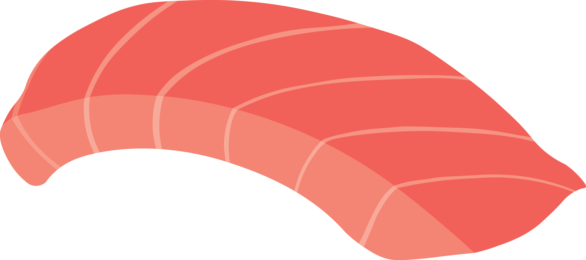

A moderately fatty cut from mid-belly of maguro is called chu-toro. Maguro, or bluefin tuna, is a very large fish, with some specimens weighing more than eight hundred pounds. Because it is so large, different cuts of the fish have different flavors and appearances, and different names.
Chutoro Sushi